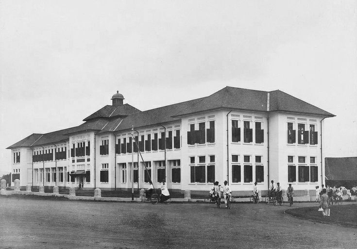
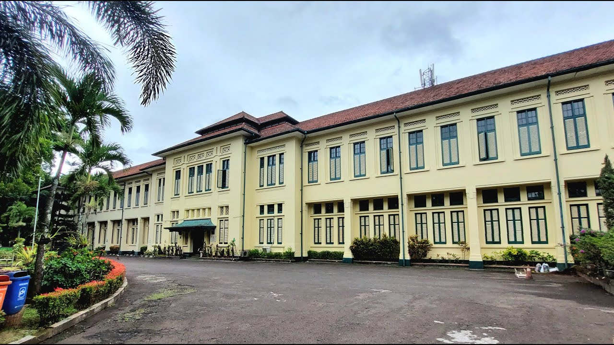

Sejarah Singkat
Gedung yang sekarang menjadi SMA Negeri 3 Bandung berdiri sejak zaman Hindia Belanda, awalnya sebagai gedung Hoogere Burgerschool (HBS) pada tahun 1916. Setelah kemerdekaan dan melalui berbagai perubahan, pada tahun 1953 institusi ini resmi menjadi SMA Negeri 3 Bandung. Sekolah ini berlokasi di Jalan Belitung No.8, Kota Bandung.
Perkembangan Waktu
- 1916 Gedung HBS dirancang oleh C.P. Wolff Schoemaker dan dibangun sebagai sekolah menengah untuk kaum elit.
- 1942-1945 Pada masa penjajahan Jepang, gedung digunakan sebagai markas tentara Jepang.
- 1953 Resmi menjadi SMA Negeri 3 Bandung.
- 1966 Gedung berfungsi bersama SMA Negeri 5 Bandung di Jalan Belitung dan terus digunakan hingga kini.
Foto Sejarah & Kini


Sumber: Ayobandung.com, Detik.com, Wikipedia, dan situs resmi SMA Negeri 3 Bandung.